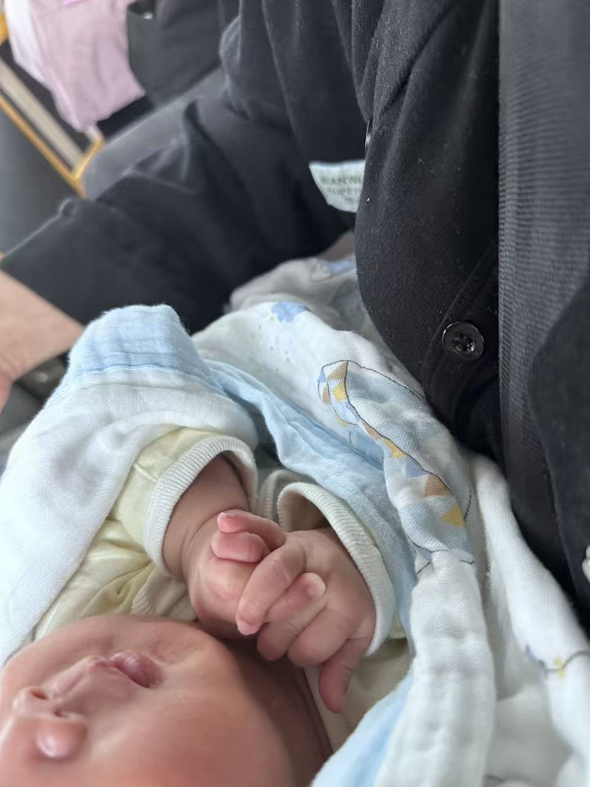

front_hand
能扶着沙发站啦
2026.07洵洵最近进步超大！扶着沙发就能自己站起来，还能小步挪动一下，小腿腿越来越有劲儿啦～


已经成长 330 天啦
洵洵最近进步超大！扶着沙发就能自己站起来，还能小步挪动一下，小腿腿越来越有劲儿啦～
七个月的洵洵已经可以独立坐稳了！虽然有时候还会摇摇晃晃，但每次都会努力再坐起来。

今天洵洵用力一蹬腿，竟然自己从仰卧翻成了趴着！小身子一扭一扭的，简直太可爱了，老母亲的心都化了～
今天洵洵对着妈妈笑了！不是睡梦中的微笑，是真正看着妈妈的眼睛，然后嘴角上扬，太治愈了！
经过漫长的等待，小洵洵终于和我们见面了！小小的身体，皱巴巴的脸蛋，却是爸爸妈妈心中最完美的宝贝。
